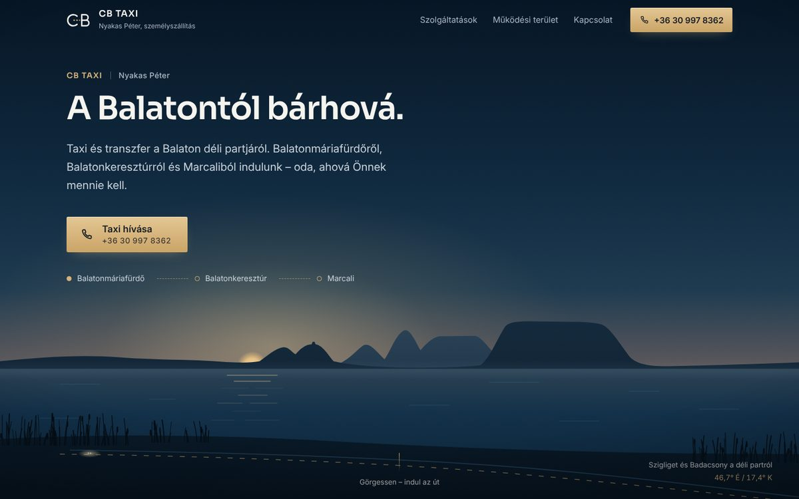

A · kiválasztva
Éjszakai út
Az oldal egy utazás. A nyitókép naplementéből éjszakába vált a déli partról nézve, majd egyetlen kisbusz végiggördül négy jeleneten – falu, országút, vasútállomás, repülőtér –, és minden megállónál ott a hívógomb.
- Paletta
- Betűk
- Sora (címek) + Inter (szöveg)
- Jellegzetes
- Görgetésre haladó, rögzített vízszintes út egy főszereplő járművel
- Erősség
- Filmszerű, emlékezetes, helyi táj; a szolgáltatások történetként jönnek
- Kockázat
- Rajzolt (nem fotó); hosszabb görgetés – rövid rögzítéssel kezelve